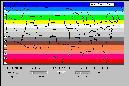
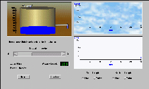
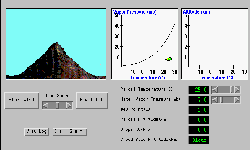
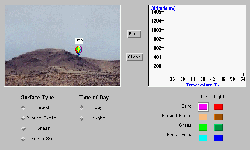

Developing, Implementing, and Sharing Constructivist Learning Resources
|
|
Partnerships to Advance Learning in Science Developing, Implementing, and Sharing Constructivist Learning Resources |
These simulations were created at Iowa State University to support learning in a large-lecture introductory meteorology class. The development and application of these simulations have been reported at several conferences (e.g. Yarger et al, 1998, Hsu et al, 1998a,b), however, the proceedings are difficult to find. Thus three manuscripts are provided to support the use of these simulations.
|

DLESE ID#: 000-532 |

|
|

DLESE ID#: 000-550 |
|
|

DLESE ID#: 000-029 |
|
|

DLESE ID#: 000-549 |
|
Yarger, D. N., J. Peter Boysen, and Rex Thomas, Iowa State University and Mary R. Marlino, Univ. Corporation for Atmospheric Research, 1998: Developing And Implementing A Constructivist Learning Environment: Translating Theory Into Practice, 10th World Conference on Educational Multimedia and Hypermedia and World Conference on Educational Telecommunications, Freiburg, Germany, June 20-25, 1998. ED MEDIA-TELCOM 1998 CD, 2116-2119.
Hsu, Ying-Shao, John Peter Boysen, Douglas N. Yarger, Iowa State University and Chi-Chuan Chen, AGRIS corporation, 1998: The development of an exploratory simulation for constructivist learning - An example of Java application, USAWebNet 98--World Conference of the WWW, Internet and lntranet, Orlando, FL, USA, November 7-12, 1998. WEBNET 1998 CD, 1090-1092.
Hsu, Ying-Shao, John Peter Boysen, Douglas N. Yarger, Iowa State University and Chi-Chuan Chen, AGRIS corporation, 1998: Development and formative evaluation of an instructional simulation for a web-aided meteorology course, USAWebNet 98--World Conference of the WWW, Internet and lntranet, Orlando, FL, USA, November 7-12, 1998. WEBNET 1998 CD, 1290-1293.
© 2002, PALS, all rights reserved
URL: https://pals.agron.iastate.edu